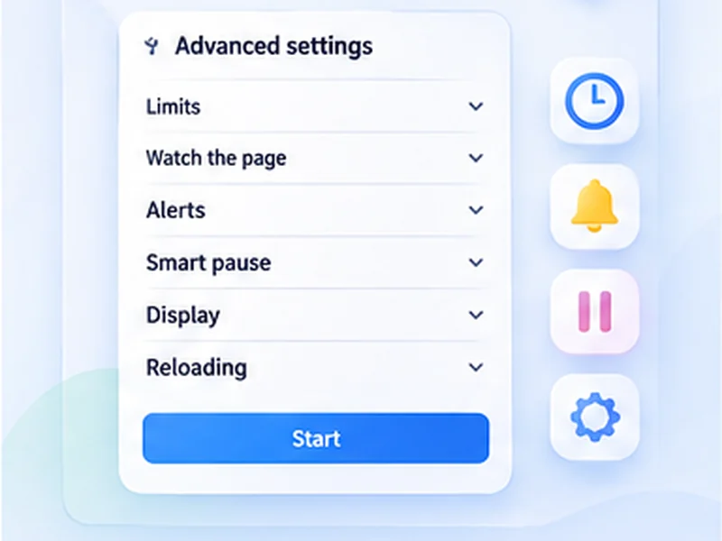

Small controls. A lot less checking.
Explore the tools that make Free Auto Refresh more than a timer: watch for page changes, protect your typing, keep your place, and control exactly when refreshing stops.

Every feature, at a glance
Choose a feature to see how it works and when it is useful.
Auto refresh timer
Pick an interval, press Start, and the page reloads itself until you stop it.
Explore auto refresh timerRandom intervals
Give a minimum and a maximum, and every refresh picks a new wait somewhere in between.
Explore random intervalsPage change monitor
Tell it what to look for.
Explore page change monitorLive countdown
A small pill sits in the corner of the page with the refresh count, the time left, and pause and stop buttons.
Explore live countdownPause while typing
A refresh that fires while you are typing wipes out your work.
Explore pause while typingRestore scroll position
Reading halfway down a long page? Turn on Keep scroll position and each refresh brings you back to the same spot..
Explore restore scroll positionHard refresh
A normal refresh can show saved copies of a page.
Explore hard refreshRefresh limits
Set a time limit, a refresh limit, or both.
Explore refresh limitsSaved profiles
Different pages need different settings.
Explore saved profiles7 languages
The popup, the settings page, the on-page counter and the notifications are translated into seven languages..
Explore 7 languagesBuilt for the way you check the web
Free Auto Refresh brings recurring page checks into one simple browser extension. Choose a fixed or random auto refresh timer, watch for a specific change, and set limits so a tab stops when you are done.
Start with the feature that fits your task, then combine timer controls, change rules and saved profiles as needed. Everything runs in your browser, with no account required.
Simple first, advanced when you need it
The popup shows only the essentials. Every other setting sits under Advanced, each with a plain-language explanation, and you can pin the ones you use most to the main view.
Questions, answered.
What can Free Auto Refresh do?
It reloads a tab on a fixed or random timer, watches the page for text or content changes, alerts you on a match, and stops on a time or count limit.
Do I need an account or a paid plan?
No. Everything is free and works without signing up.
Can I combine several features?
Yes. A timer, a watch rule, limits and smart pause all work together on the same tab.
Does it work in Firefox as well as Chrome?
Yes. Both browsers get the same features.
Can I suggest something that is not listed?
Yes. Open an issue on GitHub; requests shape what is built next.
Ready to let a tab do the checking?
Install the free extension for Chrome or Firefox. No account required.
Not seeing the feature you need?
Share the browser task you would like to make easier. Your idea helps guide what gets built next.